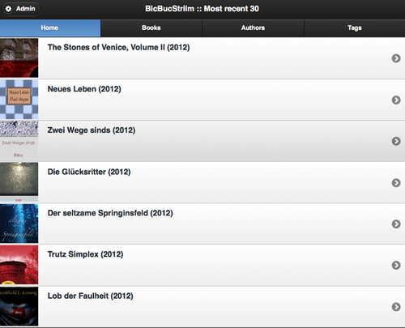
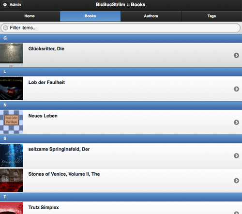
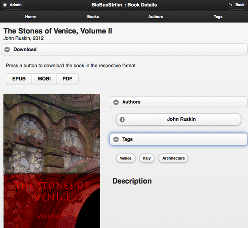
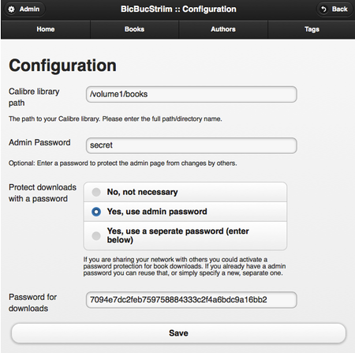

BicBucStriim
BicBucStriim streams books, digital books. It fills a gap in the functionality of current NAS devices, which provide access to your collection of music, videos and photos -- but not books. BicBucStriim covers that area and provides web-based access to your e-book collection.
View the Project on GitHub rvolz/BicBucStriim
Download the current installation archive(ZIP, Version 0.8∏.0)
BicBucStriim
BicBucStriim was created when I bought a NAS device (Synology DS 512+) to store my media on it. NAS devices like the Synology DS typically include media servers that publish audio, video, photos, so that you can access your media from all kinds of devices (TV, smart phone, laptop ...) inside the house, which I found very convenient. Unfortunately there was nothing like that for e-books. So I started to develop BicBucStriim.
BicBucStriim is a simple PHP application that runs in the Apache/PHP environment provided by the NAS (or any other server). It assumes that you manage your e-book collection with Calibre. The application reads the Calibre data and publishes it in HTML form. To access the e-book catalog you simply point your ebook reader to your NAS, select one of your e-books and download it.
Alternatives
BicBucStriim is intended for in-house usage, on a NAS or a similar device without much memory and processing power. On a PC you could simply use the Content Server built into Calibre.
If you are looking for a possibility to publish a larger book collection, or want to publish on the Internet, then calibre2opds might be interesting. It generates a static HTML catalog of a Calibre library that then can be transferred to a web server.
Status
BicBucStriim is still under development. Version 0.8.0 of BicBucStriim:
- is easy to install
- displays the 30 most recent titles on the index page
- provides listing/filtering/searching for book titles
- provides listing/filtering/searching for authors
- provides listing/filtering/searching for tags
- shows detail pages for authors and books (including download links)
- is ready for mobile clients (tested with Kindle, iPhone, iPad)
- offers an optional download protection for books (think "parental control")
- is bilingual, English/German
- has an admin GUI for configuration
New in version 0.8.0
- Easier installation/configuration: no textfile editing anymore, all settings can be configured in the admin section
- more pictures: book title listings include cover thumbnails
- more data: author and tags listings show the number of books per item for easier orientation
Features
BicBucStriim just displays what is stored in your Calibre library. The start page lists the 30 most recent books in your library, assuming that they are new and therefore need to be read:

In addition the main menu shows three ways to navigate through your library, by book title (books), author name (authors) and tag (tags). All three sections work in the same way, you either scroll through the listing or filter/search by entering something in the search bar at the top.

Once a book is selected, the app shows a details page with title, author information, tags and the book description. In the download section of that page there are download links for all book formats stored in the Calibre library. Click on a link and the book file will be immediately sent to your device.

Install
The easy way assumes that BicBucStriim lives right below the web root of your device and can be addressed like http://<your ip>/bbs/:
- Download a installation archive from GitHub.
- Unarchive the downloaded archive below the web server root of your NAS (e.g. "/volume1/web" on a Synology device)
- Rename the newly created directory (e.g. BicBucStriim-0.7.0) to "bbs".
- The "data" directory and its contents must be writeable for all. Depending on your method of unarchiving this might be already the case. However, in case you experience access error just use a terminal to correct this: `chmod -R ga+w data`.
- A freshly installed BicBucStriim app will show you the admin section, where you will have tell the app where your Calibre library is located. Everything else is optional. Just have a look ang navigate to: `http:///bbs/`.
Tell BicBucStriim where your Calibre library lives

BicBucStriim needs to know where you Calibre library directory resides, the full path to the folder that contains your metadata.db and the book directories. In my case that is /volume1/books so I entered this path in the admin page.
That is all you need to do to get BicBucStriim running. Save and navigate to the start page. The index page should appear.
If the app can't access the Calibre library it will tell you. BicBucStriim looks for a valid Calibre libraray directory with file `metadata.db` at the top. The most common problems are access errors. The app must be able to access the library. In case of problems you should adjust your access restrictions for the Calibre directory.
Optional: Protect the admin section
If you are sharing your home network with others you might want to restrict access to BicBucStriims admin page so that nobody can change the settings/passwords. To do this simply enter an admin password and save again. From then on the admin page is only accessible for people with the right password.
Optional: Download protection
BicBucStriim is a personal application and assumes that it is running in a safe environment. The emphasis is on conveniency in your home LAN, so there is not much security built in. However, for situations where parental control, or something like that, is necessary, we have the download protection. When activated users need a password to download book files. By default downloads are not protected.
By default the download protection is switched off. If you want to enable it you have two options:
- Reuse the admin password: if you already have an admin password and won't have to share it just click on this option. Book downloads will be protected using your admin password. You don't need to have two passwords in this case.
- If the above scenario doesn't fit, you can simply use a separate password for download.
That's it. (To turn download protection off just click the No option.) The download links will now only appear if the valid password was entered:

Requirements
- Apache web server with PHP 5.2+ and sqlite3 support
License
BicBucStriim itself is licensed under the MIT license, for the licenses of the libraries used see the file NOTICE.
(The MIT License)
Copyright (c) 2012 Rainer Volz
Permission is hereby granted, free of charge, to any person obtaining a copy of this software and associated documentation files (the 'Software'), to deal in the Software without restriction, including without limitation the rights to use, copy, modify, merge, publish, distribute, sublicense, and/or sell copies of the Software, and to permit persons to whom the Software is furnished to do so, subject to the following conditions:
The above copyright notice and this permission notice shall be included in all copies or substantial portions of the Software.
THE SOFTWARE IS PROVIDED 'AS IS', WITHOUT WARRANTY OF ANY KIND, EXPRESS OR IMPLIED, INCLUDING BUT NOT LIMITED TO THE WARRANTIES OF MERCHANTABILITY, FITNESS FOR A PARTICULAR PURPOSE AND NONINFRINGEMENT. IN NO EVENT SHALL THE AUTHORS OR COPYRIGHT HOLDERS BE LIABLE FOR ANY CLAIM, DAMAGES OR OTHER LIABILITY, WHETHER IN AN ACTION OF CONTRACT, TORT OR OTHERWISE, ARISING FROM, OUT OF OR IN CONNECTION WITH THE SOFTWARE OR THE USE OR OTHER DEALINGS IN THE SOFTWARE.